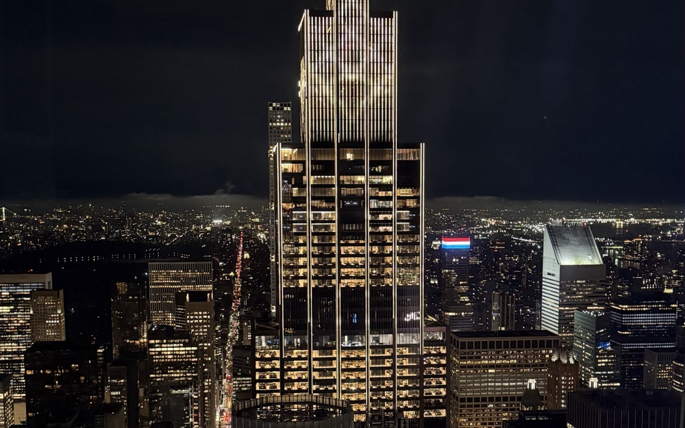

One minute in New York. Press play and the photo follows the sound.

Walking over the Manhattan Bridge at sunset
Press play to start
Jump to a moment


Photos by Sarah Khan. Sounds are Creative Commons field recordings from radio aporee on the Internet Archive:
Manhattan Bridge Walk (marialab24, public domain) · McDonald's Times Square order numbers (Peter Stets, public domain) · NYC Ferry, Rockaway Beach to Manhattan (Carlo Patrao, CC BY 3.0) · Times Square rainy morning (Peter Stets, public domain)